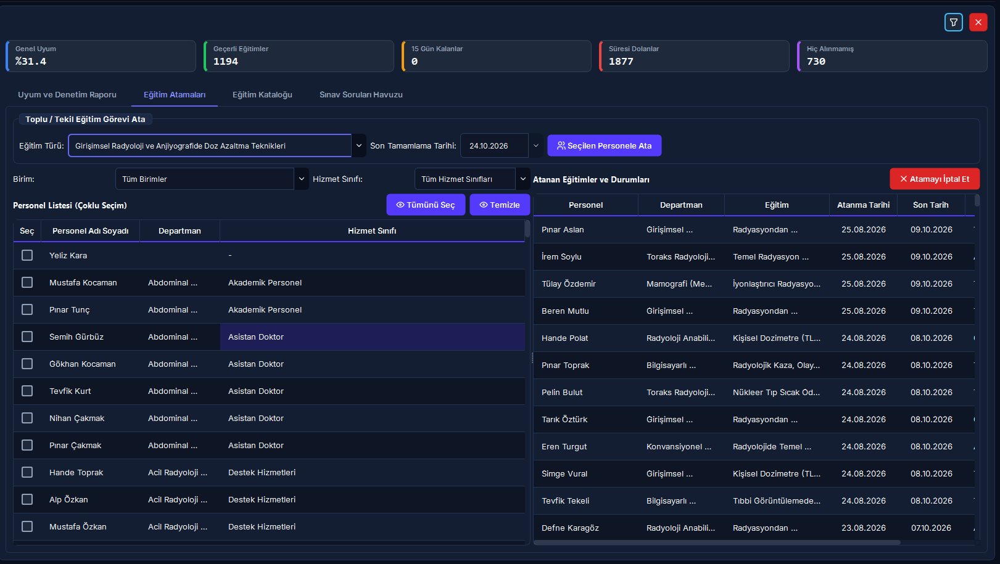
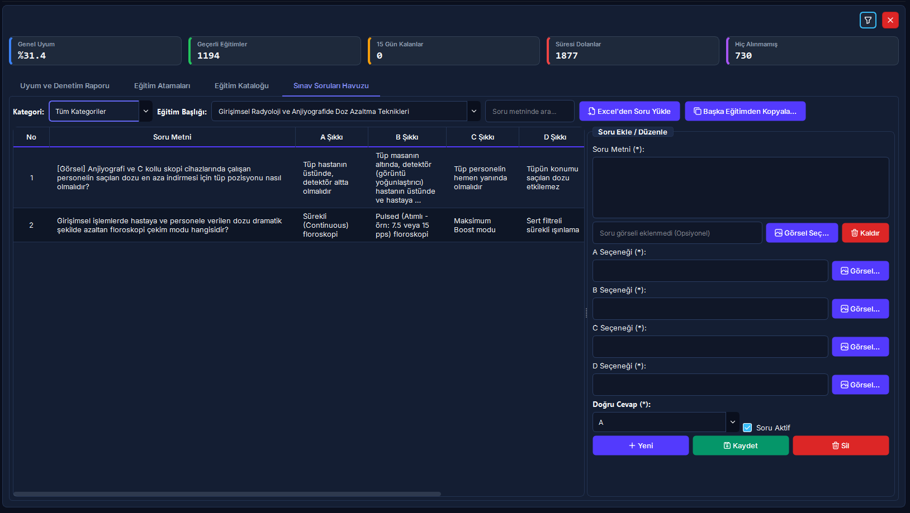
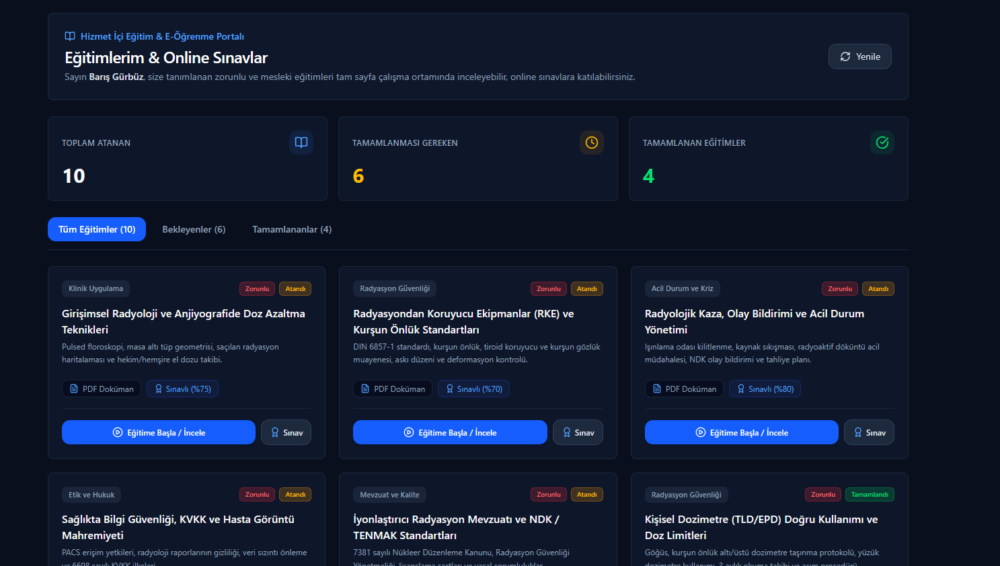
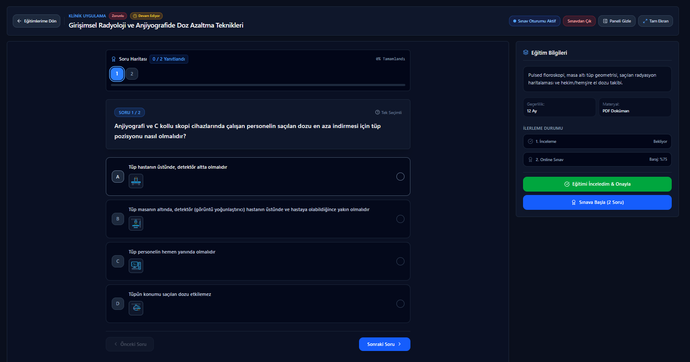

Hizmet İçi Eğitim ve Online Sınav Yönetimi
Sağlıkta Kalite Standartları (SKS 6.1) ve Nükleer Düzenleme Kurumu (NDK) mevzuatının zorunlu kıldığı yıllık temel radyasyon güvenliği, radyoizotop kullanımı, hasta ve çalışan korunması ile acil durum eylem eğitimlerinin kurumsal düzeyde planlandığı, personele atandığı, video/doküman içeriklerinin sunulduğu, merkezi soru bankasından hazırlanan online sınavlarla başarı barajının değerlendirildiği ve resmi denetimlere yönelik Uyum Matrisi'nin dinamik olarak üretildiği entegre eğitim ve belgelendirme sistemidir.
Vizyonder Hızlı Karar Reçetesi (Eğitim & Sınav Özeti)
SKS ve NDK zorunlu yıllık radyasyon eğitimlerini, PDF dokümanlarını ve video bağlantılarını tanımlayın; geçerlilik süresini ve baraj puanını belirleyin.
Personele eğitimleri topluca atayın. Excel üzerinden soru bankasını içe aktarın; kopya önleyici dinamik soru-şık karıştırma motorunu çalıştırın.
Personel portal üzerinden sınavı çözer. %70 barajı aşılınca dijital sertifika tescil edilir; SKS Denetim Uyum Matrisi yeşil rozete döner.
02 Mimari ve İş Akış Şeması
Eğitim kataloğu hazırlama, soru havuzu oluşturma, toplu atama, online sınav çözme ve Uyum Matrisi entegrasyonu:
03 Arayüz Bileşenleri ve 5N1K Kural Tablosu
Arayüzdeki tüm buton, tablo, form ve sayaçların çalışma kuralları ve durumları:
04 Dinamik KPI Göstergeleri ve Hesaplama Formülleri
Ekranın üst bandında yer alan 5 adet canlı performans kartı kurumun eğitim sağlığını anlık olarak yansıtır:
(Aktif + Süresiz) / Toplam Gereksinim * 100
Süresi devam eden veya süresiz tescilli kayıtlar.
Kalan süre ≤ 15 gün; bildirim motoru devrede.
Geçerliliği bitmiş; acil yenileme gerekir.
Zorunlu olduğu halde sıfır kaydı olan çalışanlar.
05 Kurumsal Uyum ve Denetim Matrisi Analizi
SKS ve NDK denetimlerinde kurumun en güçlü kanıtıdır. Arka planda aktif çalışanlar ile zorunlu eğitim kataloğu çapraz eşleştirilerek (CROSS JOIN) personelin tüm eğitim geçmişi sorgulanır:
Eğitim tamamlanmış, sınavı geçilmiş ve geçerlilik süresi devam ediyor.
Geçerlilik bitişine 15 gün veya daha az kalmış; otomatik uyarı gönderilmiş.
Eğitimin süresi bitmiş; SKS denetim puanını düşürmemesi için derhal yenilenmelidir.
Yeni işe başlayan veya zorunlu eğitimi kuruma girdiğinden beri hiç almamış personel.
Resmi Denetim Heyeti İçin Renkli Excel Çıktısı
Üstteki [Excel Raporu] butonuna tıklandığında kurumsal lacivert başlıklı resmi .xlsx matrisi üretilir.
06 Toplu ve Birim Bazlı Eğitim Atama Motoru
Yüzlerce personele tek tek görev atamak yerine birim ve meslek filtresiyle tek tıkla toplu görevlendirme:
-
Hedef Personel Grubunu Süzme: Sol üstteki Birim Filtresi (
comboAtamaBirimFilter) veya Hizmet Sınıfı Filtresi (comboAtamaHizmetFilter) ile listeyi daraltın. - Toplu Seçim: Tablodaki personelleri tek tek onay kutularıyla seçin veya sol üstteki [Tümünü Seç] butonuna tıklayarak süzülen herkesi tek hamlede işaretleyin.
- Eğitim ve Son Tarih: Üstteki Atanacak Eğitim açılır kutusundan ilgili eğitimi seçin ve Son Tamamlama Tarihi (varsayılan: 30 gün sonrası) takvimini belirleyin.
- [Seçilen Personele Ata]: Butona basıldığında seçili personellere aynı anda atama yapılır ve sistem personellere otomatik görevlendirme bildirimi yönlendirir.
- Atama İptali: Sağdaki mevcut atamalar listesinden bir satır seçip [Atamayı İptal Et] butonuyla gerekirse atamayı geri alabilirsiniz.
07 Eğitim Kataloğu ve Materyal Yönetimi
Kurumun eğitim müfredatının, sürelerinin ve multimedya içeriklerinin tanımlandığı merkezdir:
Temel Parametreler
- • Eğitim Adı: Eğitimin tam resmi adı (örn: "Radyasyon Alanlarında Çalışma Standartları").
- • Kategori: Radyasyon Güvenliği, Hasta Güvenliği, Genel Kalite vb.
- • Geçerlilik (Ay): SKS standardı uyarınca varsayılan
12ay. Süresizler için0. - • [x] Zorunlu Eğitim: İşaretlendiğinde kurum geneli Uyum Matrisi'ne doğrudan dahil edilir.
- • [x] Online Sınav Aktif: Eğitim sonunda personelin sınav çözmesini zorunlu kılar.
- • Baraj Puanı: Sınavı geçmek için gereken başarı yüzdesi (varsayılan:
%70).
Materyal ve Video Entegrasyonu
- • Materyal Türü: Doküman / Dosya (PDF, DOCX, PPTX), Video Dosyası (MP4, WEBM) veya Harici Video URL.
- • Dosya Seç: Bilgisayarınızdaki eğitim sunumunu veya video kaydını bağlamak için
[Dosya Seç]butonunu kullanın. - • Dokümanı Aç: Yüklenen eğitim materyalini doğrulamak için doğrudan sistemin varsayılan görüntüleyicisinde açar.
- • Web Portal Stream: MP4 videoları Web Portal üzerinden mobil cihazlarda ve tarayıcılarda HTTP Range stream ile kesintisiz izlenebilir.
Sistemde kayıtlı Kalite Dokümanları kategorisi altında NDK RSGD-KLV-014 Radyasyondan Korunma Programı kılavuzunda zorunlu tutulan 11 resmi talimat (TL.RAD.01'den TL.RAD.11'e kadar: Güvenli Cihaz Kullanımı, Çalışan Korunması, Hasta Korunması, Alan Güvenliği, RKE Muayenesi, Ortam Dozu, Dozimetri, Periyodik Muayene, QA/QC, Acil Durum ve Eğitim) tanımlıdır. Bu talimatlar tüm radyasyon personeline yıllık (12 ay geçerlilik) zorunlu doküman eğitimi olarak atanır. Personel portal üzerinden bu talimatları okuyup onayladığında hem Sağlık Bakanlığı SKS v6.1 Denetim Matrisi'ne hem de resmi NDK RKP başvuru dosyasının II. Bölümüne yasal denetim iziyle anlık yansır.
08 Merkezi Soru Havuzu, Şık Görselleri ve Excel İçe Aktarım
Her eğitim için 4 seçenekli (A, B, C, D) çoktan seçmeli sorular hazırlanır. Hem soru köküne hem de şıklara bağımsız diyagram ve grafik görselleri bağlanabilir:
Görselli Soru Desteği
Radyolojik anatomik kesitler, dozimetre renk bantları, cihaz kumanda paneli veya uluslararası radyasyon sembolleri sorulara görsel olarak eklenebilir. Soru metni yanındaki [Soru Resmi Seç] veya şıkların yanındaki fotoğraf ikonlu butonlar tıklandığında görsel doğrudan sisteme entegre edilir.
[Şablon İndir] & [Excel'den Soru Yükle]
Önceden ayarlanmış Egitim_Sinav_Sorulari_Sablonu.xlsx şablonunu indirin; onlarca soruyu Excel'de hazırlayıp tek tıkla yükleyin.
[Başka Eğitimden Soru Kopyala]
Geçen yılın eğitimindeki veya benzer kategorideki bir eğitimin sınav sorularını tek hamlede yeni eğitime kopyalayarak zamandan tasarruf edin.
10 15 Gün Önceden Otomatik Sistem Bildirim Motoru
Zamanlanmış arka plan servisi (check_and_create_expiry_notifications) sayesinde hiçbir eğitim süresi unutulmaz:
Geçerlilik süresi dolmak üzere olan çalışanlar bitişe 15 gün kala otomatik olarak tespit edilir. Mükerrer bildirim koruması sayesinde her personele günde sadece bir kez aşağıdaki resmi uyarı iletilir:
11 Hibrit Arayüz ve Web Portalı Görünümü
Masaüstü yönetim kokpiti ile Web Portalı arasında çift yönlü senkronizasyon:
Masaüstü Uygulaması (Yetkili & Denetim Merkezi)
- • Müfredat, kategori ve geçerlilik ayı tanımlama.
- • Birim ve hizmet sınıfına göre toplu personel atamaları.
- • Soru havuzu hazırlama, Excel şablon aktarımı ve soru kopyalama.
- • Kurum geneli Uyum Matrisi izleme ve renkli Excel (.xlsx) çıktısı.
Web Portalı (Personel ve Video Eğitim Portali)
- • Personel Eğitim Paneli: Kendisine atanan eğitimleri ve kalan süreleri görme.
- • HTTP Range Video Stream: Büyük boyutlu eğitim videolarını ve PDF'leri tarayıcıda izleme.
- • Web Sınavı: Soruları doğrudan tarayıcı üzerinden çözüp anlık baraj sonucunu alma.
- • Kurumsal Dashboard: Birim bazlı uyum oranlarını web grafikleriyle izleme.
Masaüstü ve Web Portalı Ekran Görüntüleri
Hizmet içi eğitim uyum matrisi, soru bankası ve online sınav ekranlarının masaüstü ve web portalı görünümleri:




12 Hata Mesajları ve Sorun Giderme Rehberi
Karşılaşabileceğiniz sistem uyarıları ve çözüm adımları:
Hizmet İçi Eğitim, Sınav & Mit Avcısı (Kritik Kurallar)
"Online sınavda %70 baraj puanının altında kalan personel eğitimden elenir ve bir daha sınava giremez."
Amaç öğrenmeyi pekiştirmektir. Personel materyalleri tekrar gözden geçirerek sınırsız sayıda sınava yeniden girebilir; her sınavda soru ve seçenekler dinamik olarak karıştırılır.
"Kurum Uyum Matrisinde zorunlu eğitimi 'Hiç Almamış' görünen çalışanlar denetim başarı oranını etkilemez."
SKS 6.1 çapraz denetim matrisi gereğince aktif personelin zorunlu eğitimi hiç almamış olması kurumun genel kalite ve uyum puanını doğrudan düşürür.
"Sınavı olmayan eğitimlerde personelin materyali incelediğini kanıtlamak için ıslak imzalı tutanak şarttır."
Sınavsız eğitimlerde personel portaldan dokümanı inceleyip 'Okudum / İnceledim' butonuna bastığında sistem IP ve zaman damgasıyla dijital onay üretir; bu kayıt resmi denetim kanıtıdır.
13 Sıkça Sorulan Sorular (SSS)
Sınavda başarısız olan bir personel için sınav hakkı sınırı var mıdır?
Hayır. Personel başarı baraj puanına (varsayılan: %70) ulaşana kadar eğitim materyalini tekrar gözden geçirerek sınırsız sayıda sınava yeniden girebilir. Her yeni denemede sorular ve şıklar dinamik olarak yeniden karıştırılır.
Uyum Matrisinde "Hiç Alınmamış" görünen personeller kurum uyum oranını düşürür mü?
Evet. Zorunlu olarak tanımlanan bir eğitimi henüz tamamlamamış olan tüm aktif çalışanlar mor renkli "Hiç Alınmamış" statüsüne düşer ve Genel Uyum Oranını doğrudan aşağı çeker. Bu personellere acil toplu eğitim ataması yapılmalıdır.
Online sınavı olmayan bir eğitimin tamamlanması nasıl gerçekleşir?
Eğer eğitim kataloğunda [Online Sınav Aktif] seçeneği işaretlenmemişse, personel eğitim dokümanını veya videosunu inceledikten sonra [Okudum / İnceledim] butonuna basar; sistem eğitimi doğrudan tamamlandı ve onaylandı olarak kaydeder.
15 gün kala erken uyarı bildirimi bir personele günde kaç kez gider?
Sistem içi mükerrer bildirim koruması bulunur. Aynı gün içerisinde aynı personel ve eğitim için yalnızca tek bir hatırlatma bildirimi üretilir.